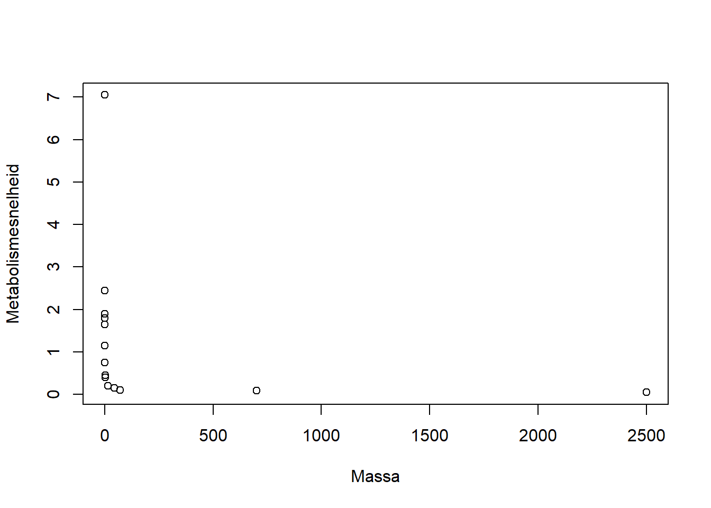
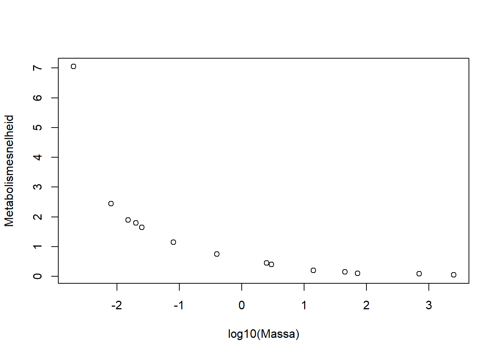
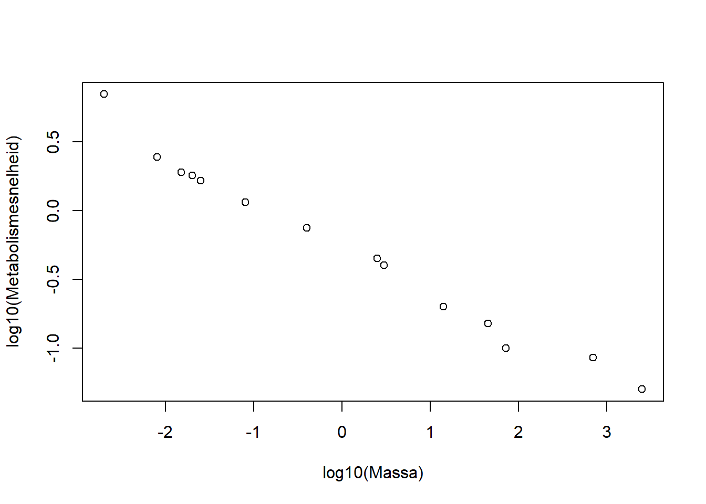
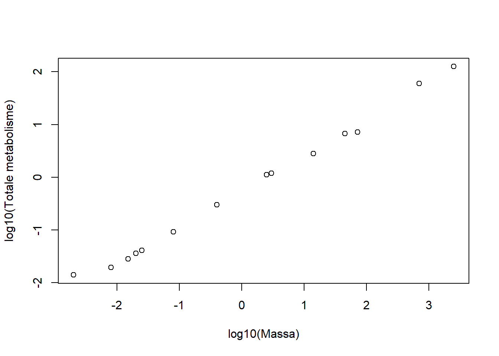

massa = c(0.002, 0.008, 0.015, 0.02, 0.025, 0.08, 0.4,
2.5, 3, 14, 45, 72,700, 2500)
metabolisme = c(7.05, 2.45, 1.9, 1.8, 1.65, 1.15, 0.75,
0.45, 0.4,0.2, 0.15, 0.1, 0.085, 0.05) Logaritmes en exponenten
In de vorige portfolio-opdracht ontdekte je dat het concept van entropie in allerlei verschillende vakgebieden opduikt, waaronder informatietheorie, thermodynamica, sociale wetenschappen en biodiversiteit. Hierbij zagen we steeds dezelfde wiskundige vorm, maar net iets anders geïnterpreteerd.
In deze opdracht bekijken we een tweede voorbeeld van zo’n terugkerende vorm: de logaritme. Je kent hem al van de pH-berekeningen die je hebt uitgevoerd bij het practicum van Chemie van het leven. Maar dezelfde functie duikt op als je kijkt naar hoe het metabolisme van een dier samenhangt met zijn lichaamsgewicht, hoe sterk een aardbeving is, of hoe hard een geluid klinkt. Aan het eind van deze opdracht kun je zelf uitleggen waarom dat zo is.
Eigenschappen van de logaritme
De logartitme heeft een handige eigenschap voor het werken met concentraties en dus met de pH: hij comprimeert een enorm bereik (14 ordes van grootte in \([\text{H}^+]\)) tot een overzichtelijke schaal. Diezelfde eigenschap zit achter de schaal van Richter (aardbevingen) en decibel (geluid): elke stap van 1 staat voor een factor 10 in de onderliggende grootheid.
Maar de logaritme heeft nog een tweede, andere eigenschap, die je eerder bij de rekenregels al hebt gezien: hij zet een machtsverband om in een lineair verband. Die eigenschap staat nu centraal, in een heel andere context dan pH: hoe lichaamsgrootte samenhangt met de rest van de biologie van een dier.
Exercise 1 Welke van deze eigenschappen van de logaritme verwacht je nodig te hebben om in deze opdracht het verband tussen massa en metabolisme van zoogdieren te analyseren? En op welke manier?
TipAntwoord Exercise 1
Voor het metabolisme-verband hebben we beide eigenschappen nodig. Omdat de massa van zoogdieren een groote bereik heeft, is het handig om hiervoor een logaritmische schaal te gebruiken. De eigenschap dat de logaritme een machtsverband omzet in een lineair verband, is handig omdat we een machtsverband zullen tegenkomen, dat lineair wordt na een log-transformatie. Hierdoor kunnen we gemakkelijker parameters schatten.
Evo-devo: Allometrische schaling
We gaan nu kijken naar een andere context waarin logaritmes en exponenten helpen bij het begrijpen van biologische fenomenen. We duiken hierbij weer het vakgebied Evo-Devo in.
Een interessant fenomeen binnen de evolutie is allometrische schaling. Dit beschrijft hoe biologische eigenschappen systematisch veranderen als de lichaamsgrootte toeneemt van soort tot soort. Wat opvalt, is dat veel kenmerken, zoals metabolismesnelheid, levensduur, loopsnelheid en breingrootte, niet linear toenemen, maar volgens een bepaalde machtswet. Deze disproportionele groei noemen we allometrie. De allometrie volgt dus een algemene machtswet, die we als volgt modelleren:
\[Y = aM^b.\]
Hierbij staat \(Y\) voor de variabele die gemeten wordt (bv. metabolismesnelheid) en \(M\) voor de massa. De coëfficiënt \(a\) is soortspecifiek en \(b\) is de allometrische exponent. Deze exponent beschrijft dus de disproportionele groei die we observeren bij allerlei soorten zoogdieren.
De schijnbare paradox van de muis en de olifant
Een muis verbrandt, per gram lichaamsweefsel, veel sneller energie dan een olifant. Tegelijkertijd verbruikt een olifant, als geheel dier, enorm veel meer energie per dag dan een muis. Beide patronen volgen uit hetzelfde verband \(Y = aM^b\).
Een verklaring hier zit op dezelfde manier in welke grootheid je bekijkt: massa-specifiek metabolisme (per gram) en totaal metabolisme (per dier) volgen beide een machtswet in \(M\), maar met tegengestelde tendens. Dat ga je hieronder zelf aantonen.
Vergelijk dit met de entropie-splitsing uit het vorige onderdeel (bij ?@exr-entropie_canal): \(H(\text{fenotype}) = H(\text{soort}) + H(\text{fenotype}\mid\text{soort})\). Ook daar leek de combinatie van meer biodiversiteit én meer ordening (canalisatie) tegenstrijding, tot bleek dat het om twee aparte termen ging.
Voorbeeld en opdrachten: metabolismesnelheid
Om meer inzicht te krijgen in hoe deze machtsrelatie werkt, gaan we de volgende afbeelding analyseren:

We zien dat we een verband zoeken tussen de massa van een soort in kilogram en de metabolismesnelheid in mL zuurstofverbruik per gram per uur. Uit deze figuur kunnen we (ongeveer) de datapunten bepalen:
Een vector is hier een vector een geordende rij getallen met datapunten: de vector massa bevat veertien massawaarden, de vector metabolisme de bijbehorende veertien waarden voor de metabolismesnelheid. We hebben de vectoren in R gemaakt met de functie c(). De volgorde is essentieel: het eerste getal in massa hoort bij het eerste getal in metabolisme, enzovoort. Over vectoren leer je in het volgende portfolio-onderdeel meer.
We kunnen deze datapunten als volgt visualiseren:
plot(massa,metabolisme,
xlab = "Massa",
ylab = "Metabolismesnelheid")
Exercise 2 Bovenstaande plot ziet er anders uit dan de gegeven figuur? Los het probleem op: hoe zou je ervoor kunnen zorgen dat de data goed af te lezen wordt? Gebruik bovenstaande code als voorbeeld om een nieuwe plot te maken.
Tip: kijk goed naar de assen in Figure 1.
TipAntwoord Exercise 2
De oorspronkelijke plot toont een sterk gebogen curve omdat de massa’s over veel ordes van grootte uiteenlopen (0.002 tot 2500 kg). Door de x-as te log-transformeren worden deze waarden overzichtelijk gespreid.
plot(log10(massa), metabolisme,
xlab = "log10(Massa)",
ylab = "Metabolismesnelheid")
Exercise 3 Om Figure 1 te repliceren heb je een transformatie uitgevoerd op één van de assen. Doe hetzelfde nu voor de andere as, en plot opnieuw
TipAntwoord Exercise 3
plot(log10(massa), log10(metabolisme),
xlab = "log10(Massa)",
ylab = "log10(Metabolismesnelheid)")
Als het goed is, heb je een linear verband gevonden.
Exercise 4 Leg nu in woorden uit waarom de gebruikte methode werkt, en relateer dat aan de machtsformule en de rekenregels die genoemd zijn in het practicum-onderdeel van deze portfolio-opdracht.
TipAntwoord Exercise 3
Na het nemen van de logaritme hebben we van de machtswet \(Y=aM^b\) het volgende gemaakt: \[\log(Y)=\log(a)+b\cdot \log(M).\] Dit is een lineaire vergelijking in \(\log(M)\), met richtingscoëfficiënt b en snijpunt \(log(a)\). Daarom levert een log-log-plot van een machtsverband een rechte lijn op.
We gaan nu iets beter kijken naar de betekenis van het aangetone verband. We hebben gekeken naar de massa-specifieke metabole snelheid, die aangeeft hoe snel metabolisme verloopt per eenheid massa van een bepaald weefsel. Dit meten we bijvoorbeeld als de hoeveelheid \(\text{O}_2\) die verbruikt wordt per uur. Aan deze eenheid zien we dat we dit kunnen berekenen door de totale metabole intensiteit te delen door de massa.
Exercise 5 Het totale metabolisme verloopt volgens de machtsformule \(Y_{\text{totaal}} = aM^b\) , en de massa-specifieke intensiteit is gelijk aan \(Y_{\text{totaal}}\) gedeeld door de massa \(M\). Gebruik de rekenregels van de logaritme om een uitdrukking te vinden voor \(\log(Y_{\text{specifiek}})\) in termen van \(\log(M)\) en koppel dat aan de laatste plot die je gevonden hebt. Wat voor informatie over het lineaire verband kun je hieruit halen?
TipAntwoord Exercise 5
We vinden \[Y_{\text{specifiek}} = \frac{Y_{\text{totaal}}}{M}=\frac{aM^b}{M}=aM^{b-1}.\] Hieruit concluderen we dat \[\log\left(Y_{\text{specifiek}}\right)=\log(a) + (b-1)\log(M).\] Dit betekent dat de lijn voor de massa-specifieke intensiteit dezelfde intercep5 heeft als de lijn voor het totale metabolisme, maar een helling die precies 1 lager is.
Om terug te gaan naar het totale metabolisme in een dier, vermenigvuldigen we de massa en het massa-specifieke metabolisme.
massa_metabolisme <- massa*metabolismeExercise 6 Probeer nu een relatie te vinden tussen de massa en het totale metabolisme. Plot deze relatie op dezelfde manier als eerder.
TipAntwoord Exercise 6
plot(log10(massa), log10(massa_metabolisme),
xlab = "log10(Massa)",
ylab = "log10(Totale metabolisme)")
Exercise 7 Wat kun je opmerken over het effect van een grotere massa op de totale metabole snelheid? En op de massa-specifieke metabole snelheid?
TipAntwoord Exercise 7
Bij toenemende massa stijgt het totale metabolisme (grotere dieren verbruiken in absolute zin meer energie), maar daalt de massa-specifieke metabolische snelheid (per gram weefsel werkt een groot dier trager dan een klein dier). Beide patronen volgen hetzelfde machtsverbond, maar verschillen in de grootheid die bekeken wordt (\(Y_{\text{Totaal}}\) versus \(\frac{Y_{\text{Totaal}}}{M}\)).
Exercise 8 Gebruik de rekenregels van de logaritme en je eerdere antwoorden om een waarde voor de exponent \(b\) te vinden. Hint: Gebruik lm() op de (twee maal) getransformeerde data van het totale metabolisme (dus de plot van Exercise 6) om een schatting voor de exponent \(b\) te vinden. Vergelijk deze vervolgens met de helling die lm() geeft voor de massa-specifieke intensiteit. Klopt het verschil met wat je bij Exercise 5 had afgeleid?
Gebruik de code voorafgaand aan Vraag 9 van het practicumgedeelte als inspiratie voor het gebruik van de functie lm().
Merk op dat je de functie lm() al eerder hebt gebruikt, bij het practicum-deel van dit portfolio-onderdeel.Het zou dan vast een heel belangrijke functie zijn… Bij het volgende portfolio-onderdeel staan we hierbij stil!
TipAntwoord Exercise 8
model_totaal <- lm(log10(massa_metabolisme) ~ log10(massa))
summary(model_totaal)
Call:
lm(formula = log10(massa_metabolisme) ~ log10(massa))
Residuals:
Min 1Q Median 3Q Max
-0.13573 -0.04791 -0.03297 0.03396 0.22259
Coefficients:
Estimate Std. Error t value Pr(>|t|)
(Intercept) -0.25694 0.02493 -10.31 2.58e-07 ***
log10(massa) 0.67301 0.01328 50.68 2.29e-15 ***
---
Signif. codes: 0 '***' 0.001 '**' 0.01 '*' 0.05 '.' 0.1 ' ' 1
Residual standard error: 0.09327 on 12 degrees of freedom
Multiple R-squared: 0.9953, Adjusted R-squared: 0.995
F-statistic: 2569 on 1 and 12 DF, p-value: 2.285e-15model_specifiek <- lm(log10(metabolisme) ~ log10(massa))
summary(model_specifiek)
Call:
lm(formula = log10(metabolisme) ~ log10(massa))
Residuals:
Min 1Q Median 3Q Max
-0.13573 -0.04791 -0.03297 0.03396 0.22259
Coefficients:
Estimate Std. Error t value Pr(>|t|)
(Intercept) -0.25694 0.02493 -10.31 2.58e-07 ***
log10(massa) -0.32699 0.01328 -24.62 1.22e-11 ***
---
Signif. codes: 0 '***' 0.001 '**' 0.01 '*' 0.05 '.' 0.1 ' ' 1
Residual standard error: 0.09327 on 12 degrees of freedom
Multiple R-squared: 0.9806, Adjusted R-squared: 0.979
F-statistic: 606.3 on 1 and 12 DF, p-value: 1.215e-11Exercise 9 Je vond zojuist twee exponenten: één voor het verband tussen massa en massa-specifiek metabolisme, en één voor massa en totaal metabolisme. Gebruik je antwoord bij exr-machtsform om deze aan elkaar te koppelen. Verklaar daarmee je bevindingen.
TipAntwoord Exercise 9
Bij Exercise 5 vonden we dat deze exponenten precies 1 van elkaar verschillen. Ook hier vinden we dat de gevonden hellingen 1 van elkaar verschillen.
jouw antwoord:
Samenvattende opdracht
Wat hier opvalt, is dat één simpele wiskundige vorm, namelijk het machtsverband \(Y=aM^b\), een patroon beschrijft dat voor sterk uiteenlopende dieren en eigenschappen lijkt te gelden, van spitsmuis tot olifant. Dat zulke brede, kwantitatieve regelmatigheden in de biologie überhaupt bestaan, is opmerkelijk: de levende wereld zit vol uitzonderingen en variatie. Toch is er hier een algemene wetmatigheid te vinden. Juist de wiskunde is het gereedschap waarmee je zo’n regelmatigheid uit ruwe data kunt achterhalen. Hiervan zullen we gedurende het jaar meerdere voorbeelden zien.
In de vorige portfolio-opdracht schreef je een eigen hypothese over hoe entropie, onzekerheid en canalisatie zouden samenhangen met onderwerpen die je dit jaar nog zou tegenkomen.
Exercise 10 Lees je antwoord van toen terug.
- Klopten je verwachtingen?
- Zie je nu een verband tussen de logaritme hier en de entropie van vorige keer?
- In de introductie beschreven we dat de logaritme in zoveel uiteenlopende contexten (pH, aardbevingen, geluid, metabolisme) opduikt. Formuleer nu, in je eigen woorden, een algemene verklaring.
jouw antwoord:
Terug naar concentraties
De motivatie om de logaritme verder te onderzoeken, kwam vanuit de pH-berekeningen die we eerder hebben uitgevoerd. We hebben gezien dat de logaritme ook in andere contexten voorkomt, maar nu keren we toch nog terug naar de context van concentraties. Dit geeft al een link met iets wat we later in het jaar zullen behandelen, maar dit deel is niet strikt noodzakelijk om de logaritme goed te begrijpen. Geen zorgen dus, als je niet meer aan dit gedeelte toekomt.Het is uiteraard wel zinvol het te proberen!
Je bent al bekend met het begrip diffusie: een druppel inkt in een glas water verspreidt zich vanzelf, van een gebied met hoge concentratie naar een gebied met lage concentratie. Dat proces verloopt spontaan, zonder toevoeging van energie. Wil je het omgekeerde bereiken (namelijk de inkt weer terugconcentreren op één plek) dan kost dat wél energie.
Hetzelfde geldt voor opgeloste deeltjes tussen twee compartimenten, bijvoorbeeld binnen en buiten een cel, of aan weerszijden van een membraan. Hoe groter het concentratieverschil dat je wilt creëren of in stand wilt houden, hoe meer energie je nodig hebt. Deze relatie wordt gegeven door:
\[\Delta G = RT\ln\left(\frac{c_A}{c_B}\right)\]
waarbij \(c_A\) en \(c_B\) de concentraties in de twee compartimenten zijn, \(R\) de gasconstante is, \(T\) de temperatuur (in Kelvin), en \(\ln\) de natuurlijke logaritme (grondgetal \(e\))
De natuurljke logaritme is dezelfde functie als \(\log_{10}\), alleen met een ander grondgetal, zoals je eerder al bij \(\log_2\) zag.
\(\Delta G\) noemen we de vrije energie: de energie die vrijkomt (\(\Delta G < 0\)) of nodig is (\(\Delta G > 0\)) om deze verplaatsing te laten plaatsvinden.
Exercise 11
Als \(c_A = c_B\) geldt, wat is dan \(\Delta G\) (gebruik een rekenregel van de logaritme)? Wat betekent dat, in woorden, voor de energie die nodig is om een deeltje van compartiment \(A\) naar \(B\) te verplaatsen als er geen concentratieverschil is?
Stel \(c_A > c_B\) geldt. Is \(\Delta G\) dan positief of negatief? Bedenk of dit betekent dat het proces spontaan verloopt of dat er energie toegevoegd moet worden.
TipAntwoord Exercise 11
Als \(c_A=c_B\) geldt, is de verhouding \(c_A/c_B\) gelijk aan 1 en dus is \(\ln\left(\frac{c_A}{c_B}\right)=0\). Er is dan geen energie nodig (of vrijkomend) om een deeltje te verplaatsen. Het systeem is dan in evenwicht, er is geen netto drijvende kracht in beide richtingen.
Als \(c_A > c_B\) geldt, geldt \(\ln\left(\frac{c_A}{c_B}\right) > 0\) en dus \(\Delta G > 0\). Het verplaatsen van een deeltje richting het compartiment met de hogere concentratie (tegen de concentratiegradiënt in) kost dus energie.
Een concreet voorbeeld: de protonengradiënt in mitochondriën
We plaatsen dit verhaal in de context van de protonengradiënt over de mitochondriënmembraan. We beschrijven de concentratie protonen binnen en buiten de mitochondriën respectievelijk als \(c_A\) en \(c_B\). In mitochondriën wordt actief \(\text{H}^+\) vanuit de matrix naar de intermembraanruimte gepompt, waardoor er een pH-verschil ontstaat tussen de twee compartimenten. Stel dat de matrix pH 8 heeft en de intermembraanruimte pH 7.
Exercise 12 Bereken \([\text{H}^+]\) in beide compartimenten, en gebruik dat om \(\Delta G\) te berekenen voor het verplaatsen van één mol \(\text{H}^+\) van de intermembraanruimte terug naar de matrix. Neem \(R = 8.314~\text{J mol}^{-1}\text{K}^{-1}\) en \(T = 310~\text{K}\) (lichaamstemperatuur).
pH_matrix <- 8
pH_intermembraan <- 7
H_matrix <- 10^(-pH_matrix)
H_intermembraan <- 10^(-pH_intermembraan)
R <- 8.314
Temp <- 310
# vul aan: gebruik de formule voor Delta G
TipAntwoord Exercise 12
delta_G <- R * Temp * log(H_matrix / H_intermembraan)
delta_G[1] -5934.545Exercise 13 Interpreteer de uitkomst. Betekent dit dat protonen spontaan van de intermembraanruimte terug naar de matrix stromen, of dat de cel daar energie voor moet leveren? En hoe zit dat dan met de pomp die de gradiënt in de eerste plaats opbouwt?
TipAntwoord Exercise 13
Omdat \(\Delta G <0\) geldt, verloopt deze beweging spontaan: protonen stromen vanzelf van de intermembraanruimte terug naar de matrix, en daarbij komt energie vrij.
Deze energie die vrijkomt als protonen langs hun concentratiegradiënt terugstromen, wordt in de cel niet verspild. Het enzym ATP-synthase gebruikt precies deze stroom om ATP te maken. Dit principe heet chemiosmose. Bij het vak Celfysiologie wordt dit uitgebreider behandeld. Let er dan op dat de werkelijke drijvende kracht (de protonmotive force) naast dit concentratieverschil ook nog een elektrisch component heeft, die we hier voor het gemak buiten beschouwing hebben gelaten.
TipVoor de portfolio-ontwikkelingsgroep: fractale structuren
We hebben de logaritme tot nu toe gebruikt om een machtswet zichtbaar te maken: \(Y=aM^b\) wordt, in log-log-coördinaten, een rechte lijn, en zo vonden we een verband tussen de massa en de metabolismesnelheid van een organisme. Maar we hebben nooit gevraagd welk mechanisme die specifieke waarde eigenlijk oplegt. Het antwoord blijkt zelf weer een prachtig staaltje wiskunde te zijn.
Een paar vragen die we kunnen verkennen, zijn de volgende:
Waarom juist deze exponent? Een simpel oppervlak-tegen-volume-argument voorspelt de waarde \(b=2/3\). De data wijst eerder op \(b\approx 3/4\). Dat verschil is geen meetfout, maar heeft te maken met het achterliggende mechanisme. In het bijzonder gaat het om hoe voedingsstoffen en zuurstof door een lichaam stromen, via vertakkende netwerken zoals bloedvaten en longen. We kunnen zelf afleiden zelf af hoe de geometrie van zo’n netwerk tot deze machtswet leidt.
Overal dezelfde vorm. Bloedvaten, longen, bomen, rivierdelta’s, kustlijnen: allemaal vertakkende, fractale structuren, in totaal verschillende delen van de natuur. Waarom duikt precies die geometrie steeds weer op?
De grens van het model. Echte netwerken zijn geen perfecte fractalen. We onderzoeken waar en waarom de voorspelling niet altijd werkt in de praktijk, en wat dat ons leert over het verschil tussen een wiskundig model en de rommelige werkelijkheid die het probeert te vangen.